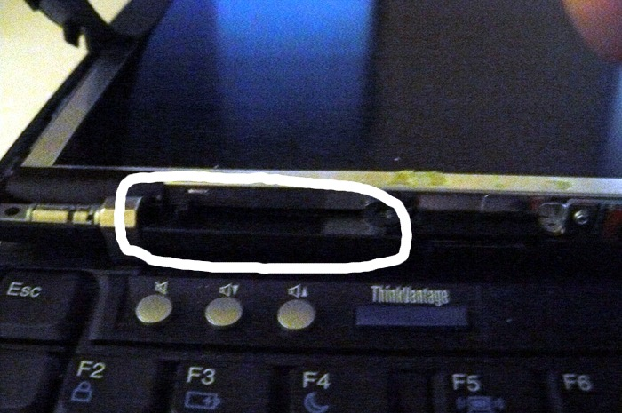
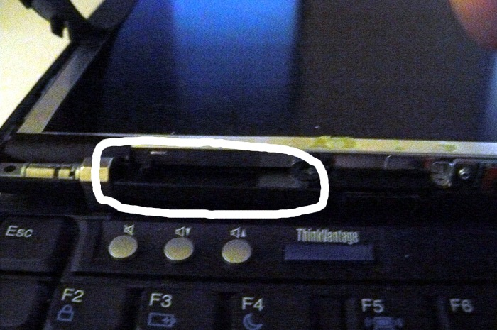
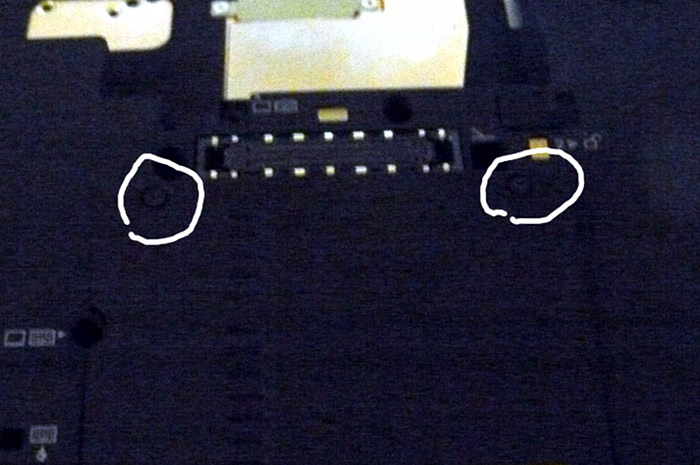
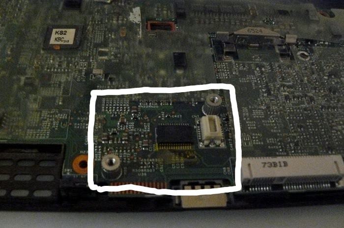
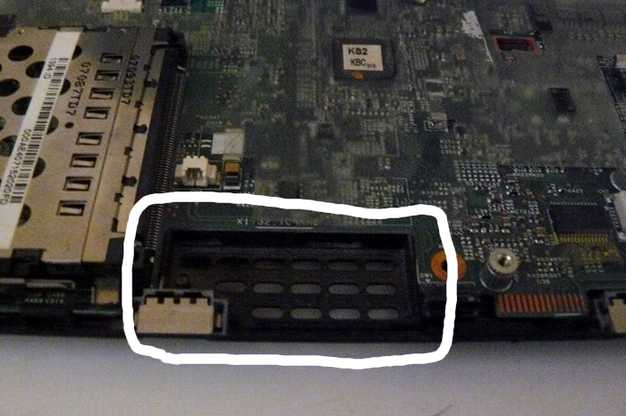
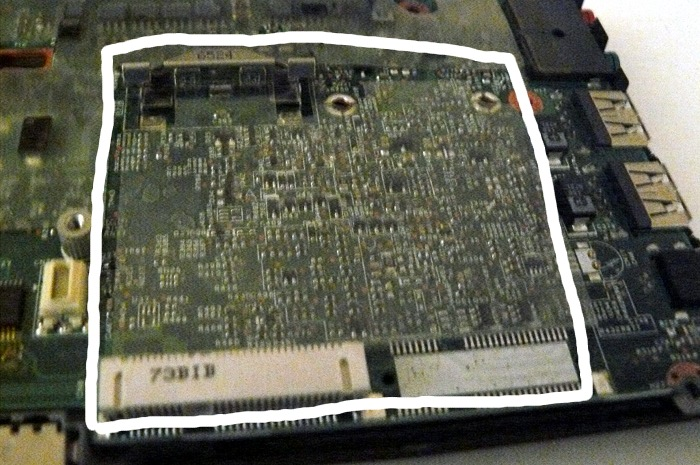

The marked screws are underneath those stickers (marked in those 3 locations at the bottom of the LCD assembly):

Now gently pry off the bottom part of the front bezel, and the bluetooth module is on the left (easily removable):

Or go back to main index
Firstly remove the bluetooth (if your X60 has this):
The marked screws are underneath those stickers (marked in those 3 locations at the bottom of the LCD assembly):
Now gently pry off the bottom part of the front bezel, and the bluetooth module is on the left (easily removable):

If your model was WWAN, remove the simcard (check anyway):
Uncover those 2 screws at the bottom:

SIM card is in the marked location:

Replacement: USB dongle.
Now get into the motherboard.
Remove those screws:

Push the keyboard forward (carefully):

Lift the keyboard up and disconnect it from the board:

Grab the right-hand side of the chassis and force it off (gently) and pry up the rest of the chassis:

You should now have this:

The following is a summary of what you will remove (already done to this machine):

Note: the blue lines represent antenna cables and modem cables. You don't need to remove these, but you can if you want
(to make it tidier after removing other parts). I removed the antenna wires, the modem jack, the modem cable and
also (on another model) a device inside the part where the wwan antenna goes (wasn't sure what it was, but I knew it wasn't needed). This is optional
Remove the microphone (can desolder it, but you can also easily pull it off with you hands). Already removed here:

We do not know what the built-in microcode (on the CPU) is doing. The theory is that it could be programmed to take commands that do something
and then the CPU returns results. (meaning, remote security hole). So we remove it, just in case.
Replacement: external microphone on USB or line-in jack.
Remove the modem:

(useless, obsolete device)
Remove the speaker:

Reason: combined with the microphone issue, this could be used to leak data.
Replacement: headphones/speakers (line-out) or external DAC (USB).
Remove the wlan (also remove wwan if you have it):

Reason: has direct (and very fast) memory access, and could (theoretically) leak data over a side-channel.
Go to http://media.ccc.de/browse/congress/2013/30C3_-_5529_-_en_-_saal_2_-_201312271830_-_hardening_hardware_and_choosing_a_goodbios_-_peter_stuge.html or directly to the video: http://mirror.netcologne.de/CCC/congress/2013/webm/30c3-5529-en-Hardening_hardware_and_choosing_a_goodBIOS_webm.webm.
A lot of this tutorial is based on that video. Look towards the second half of the video to see how to do the abev.
Copyright © 2014 Francis Rowe, All Rights Reserved.
See ../license.html for license conditions.